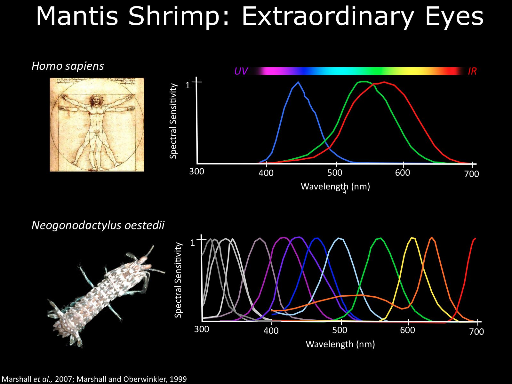

No canto esquerdo, nosso campeão, o incrível camarão-louva-a-deus-palhaço
Também conhecido como lagosta-boxeadora
Odontodactylus scyllarus
Pode ter de alguns milímetros a grandiosos 40cm em espécies maiores
Carnívoros
Vivem em águas quentes e rasas
| Reino | Animalia |
|---|---|
| Filo | Arthropoda |
| Subfilo | Crustacea |
| Classe | Malacostraca |
| Subclasse | Hoplocarida |
| Ordem | Stomatopoda |

Golpes devastadores
Possuidor de um dos mais rápidos e violentos golpes do reino animal
Seu soco pode apresentar a velocidade de um tiro calibre .22
e força de impacto de 60 kg/cm²!
Seus golpes são capazes de quebrar facilmente
conchas e carapaças calcificadas
e até vidros reforçados de aquários!
Seus membros se movem tão rápido que a água ao redor deles
ferve num processo chamado supercavitação
Visão trancendental
É capaz de interpretar ultravioleta e infravermelho
Possui 16 cones receptores de cores
nós, humanos possuimos 3
Imagine o mundo através de seus olhos!
